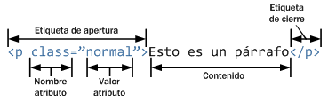

La Web es el nombre común de la World Wide Web, un subconjunto de Internet que consta de las páginas a las
que se puede acceder mediante un navegador web. Mucha gente asume que la Web es lo mismo que Internet y
usan estos términos indistintamente.
Las páginas web están formateadas en un lenguaje llamado Lenguaje de Marcado de Hipertexto (HTML). Es este idioma el que permite a los usuarios hacer clic en las páginas de la Web a través de enlaces.
La Web utiliza el protocolo HTTP para transmitir datos y compartir información. Los navegadores como:
Google Chrome
Mozilla Firefox
Microsoft Edge
Safari
Se utilizan para acceder a documentos web o páginas web, que están conectadas a través de enlaces.
La Web es solo una de las formas en que se comparte información a través de Internet; otros incluyen:
Correo electrónico
Mensajería instantánea
Protocolo de transferencia de archivos (FTP)
Streaming por video
Entre otros
¿Quien creo la WEB?
Tim Berners Lee, creador de la World Wide Web
En la actualidad dirige la W3C
Madrid - 22 MAY 2002 - 17:00 CDT
Berners-Lee fue el creador en 1989 de la World Wide Web (WWW), un proyecto global de hipertexto que permitiría
por primera vez al mundo trabajar conjuntamente en la red. Nacido en 1955 en el Reino Unido, se diplomó en física
por la Universidad de Oxford e inició su actividad profesional en el CERN (Laboratorio Europeo de Física de las Partículas),
con sede en Ginebra, en 1980, donde elaboró un programa llamado Enquire para almacenar y recuperar información a partir de
asociaciones aleatorias. Ese programa inició el desarrollo del World Wide Web, que inventó a finales de 1990.
ESTRUCTURA BASICA DE UN ELEMENTO HTML
¿Que es un elemento y una etiqueta ?
Elementos HTML
Además de etiquetas y atributos, HTML define el término elemento para referirse a las partes que componen los documentos HTML.
Aunque en ocasiones se habla de forma indistinta de "elementos" y "etiquetas", en realidad un elemento HTML es mucho más que una etiqueta, ya que está formado por:
Una etiqueta de apertura.
Cero o más atributos.
Texto encerrado por la etiqueta.
Una etiqueta de cierre.
El texto encerrado por la etiqueta es opcional, ya que algunas etiquetas de HTML no pueden encerrar ningún texto. El siguiente esquema muestra un elemento HTML, formado por una etiqueta < p >,
atributos y contenidos de texto:

Figura 2.7 Esquema de las partes que componen un elemento HTML
Ejemplo:
< html>
< head>
< title>Ejemplo de elementos en línea y elementos de bloque< /title>
< /head>
< body>
< p>Los párrafos son elementos de bloque.< /p>
< a href="http://www.google.com">Los enlaces son elementos en línea< /a>
< p>Dentro de un párrafo, < a href="http://www.google.com">los enlaces< /a>
siguen siendo elementos en línea.< /p>
< /body>
< /html >
¿Que es una etiqueta?
HTML es un markup language, lo que significa que está escrito con códigos que puede leer una persona sin que sea necesario
compilarlo primero. En otras palabras, el texto en una página web está «marcado» con estos códigos para dar instrucciones al
navegador web sobre cómo mostrar el texto. Estas etiquetas de marcado son las propias etiquetas HTML.
Cuando escribes código en HTML, estás escribiendo etiquetas HTML. Todas las etiquetas HTML están hechas con un número de partes específicas, incluyendo:
El carácter “menor que” <
Una palabra o carácter que determina qué etiqueta se está escribiendo
Cualquier número de atributos HTML que se quiera usar, escritos de la forma nombre =”valor”
El carácter “mayor que” >
Para mayon informacion relacionada con el tema de clic en el siguinete enlace
Un párrafo es un conjunto de frases sobre un mismo asunto. En HTML para demarcar un párrafo se
usa la etiqueta p, situándose la instrucción de inicio < p > al comienzo del párrafo y la instrucción
de fin < / > tras la última frase. Entre ellas pueden insertarse tantos saltos de línea como
se deseen así como muchos otros elementos HTML.
A continuación se muestra un ejemplo:
< p>
Estaba internándose en lo desconocido.
< /p>
< p>
Durante todo el trayecto hasta Woodfield no dejó
de pensar en los aspectos económicos, con el
temor de estar cometiendo...
< /p>
Parrafo con preformato <pre>"Aqui se coloca el texto que se desea escribir" </pre>
Representa texto preformateado. El texto en este elemento típicamente se
muestra en una fuente fija, no proporcional, exactamente como es mostrado
en el archivo. Los espacios dentro de este elemento también son mostrados
como están escritos.
Strong
El elemento strong es el apropiado para marcar con especial énfasis las partes más importantes de un texto.
Sus etiquetas son: < strong > y < /strong > (ambas obligatorias)
Énfasis
<em > Texto </em>
El elemento HTML < em > es el apropiado para marcar con énfasis las partes importantes de un texto. El elemento < em >
puede ser anidado, con cada nivel de anidamiento indicando un mayor grado de énfasis.
Cursiva
<i > </i >
Para escribir un texto en cursiva se ha utilizado mucho en el pasado la etiqueta < i > (que por supuesto debes cerrarla con la etiqueta </i >). También se ha utilizado la etiqueta < em >
. Como en el caso de la negrita, aunque podrían atribuírseles distintos significados no vamos a prestarle atención a esta cuestión ahora. Aquí presentamos un ejemplo:
Esta palabra la vamos a poner en <i>cursiva</i>
Negrita
<b > </b >
Existen dos etiquetas que hacen que nuestro texto se convierta en negrita.
La utilización de cualquiera de ellas es en principio indiferente
(aunque pueda atribuírseles un significado diferente a cada una de
ellas no vamos a prestarle atención a esto ahora). La primera es la
etiqueta lo que veríamos en pantalla:
Esta palabra la vamos a poner en <b> negrita </b>
TABLAS
Una tabla no es otra cosa más que un medio de organizar datos en filas y columnas.
Este concepto ha estado presente en nuestra sociedad por un largo período de tiempo
y ha sido adoptado por HTML en sus etapas iniciales, como una forma de transmitir
información que, de otro modo, no sería comprendida tan fácilmente.
En documentos HTML una tabla puede ser considerada, resumidamente, como un
grupo de filas donde cada una contiene a un grupo de celdas. Esto es
conceptualmente distinto a un grupo de columnas que contiene a un grupo de
filas, y esta diferencia tendrá un impacto en la composición y comportamiento
de la tabla.
Como muchas otras estructuras de HTML, las tablas son construidas utilizando
elementos. En particular, una tabla básica puede ser declarada usando tres
elementos, a saber, table (el contenedor principal), tr (representando a
las filas contenedoras de las celdas) y td (representando a las celdas).
Dejémoslo más claro con un ejemplo:
<table class="default" border="10">
<tr>
<td>Celda 1</td>
<td>Celda 2</td>
<td>Celda 3</td>
</tr>
<tr>
<td>Celda 4<td>
<td>Celda 5</td>
<td>Celda 6</td>
</tr>
</table>
Celda 1
Celda 2
Celda 3
Celda 4
Celda 5
Celda 6
Ejemplo:
Producto
Cantidad
Precio
Ventas/mes
Area
tenis
25500
700
1500
Caballeros
zapatos
7580
600
500
tenis
154320
1500
2000
Total:
4000
Multimedia
imagen
audio
Para colocar una imagen se requieren de las etiquetas < img src="direccion
de la imagen en donde esta guardada" alt="nombre de la imgen, este nombre
sera el que este en el bucador google" width="400" height="200" especificacionede de altura y largo de la imagen >
Para colocar un audio se requieren de las etiquetas < audio src="direccion
del audio en donde esta guardado" alt="nombre del audio, este nombre
sera el que este en el bucador google" width="400"height="200" son las
especificacion de altura y largo controls es para que aparescan los
controladores de audio >
Video
Para colocar un video se requieren de las etiquetas < video src="direccion
del video en donde esta guardado" alt="nombre del video, este nombre
sera el que este en el bucador google" width="400"height="200" son las
especificacion de altura y largo controls es para que aparescan los
controladores de video >
Se puede agregar el autoplay para que el video se reproduzca automaticamente
Video con autoplay
AQUI SE ENCUANTRRA CADA UNOS DE LOS DIFERENTES FORMATOS MULTIMEDIA
VIDEO CON DIFERENTE FORMATO
<video width="500" height="400" controls autoplay>
<source src="videos/Construyendo un sueño - Cortometraje.mp4">
<source src="videos/Construyendo un sueño - Cortometraje.MPEG">
<source src="videos/Construyendo un sueño - Cortometraje.WAV">
<img src="imagenes/imagen1.jpg"> aqui se pone una imagen dado caso que
no se reprodusca ninguno avisando queno es posible reproducir
</video>
Aqui se pueden agregar el mismo video en diferentes formatos dado que el reproductor
no acepte un formato en especifico